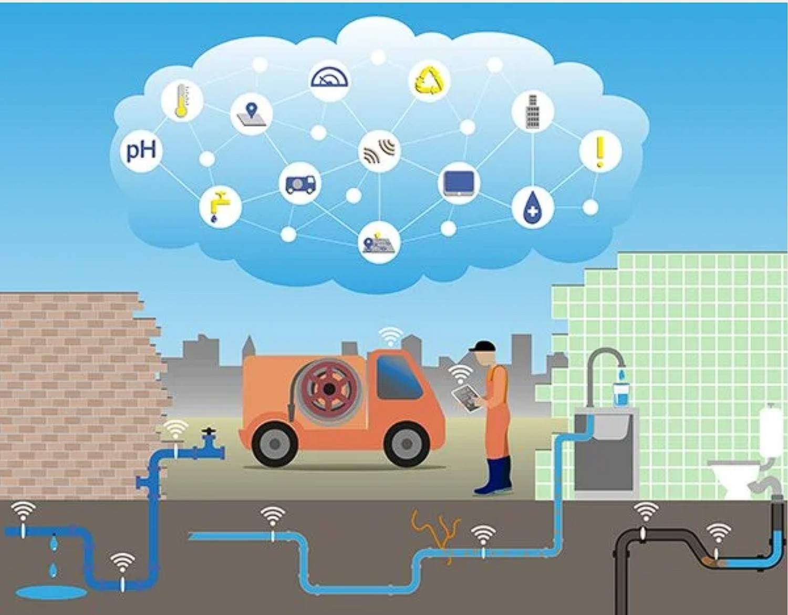
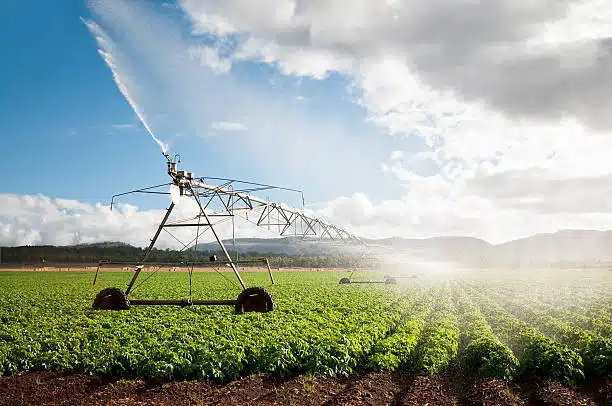

Future Innovation
Smart technologies are revolutionizing water security. Discover how big data, AI, and next-generation infrastructure are being deployed to protect global freshwater reserves.
1. What is Water Tech?
Technological innovation is rapidly shifting how humans interact with and manage water. In the face of severe climate shifts and surging population demands, traditional water management systems are no longer enough to guarantee water security. We are now entering an era where digital technologies converge with hardware engineering to create hyper-efficient, highly responsive water networks.
SDG Target 6.a: By 2030, expand international cooperation and capacity-building support to developing countries in water- and sanitation-related activities and programmes, including water harvesting, desalination, water efficiency, wastewater treatment, recycling and reuse technologies.
2. Smart Water Grids
Similar to electric grids, Smart Water Grids embed digital intelligence into our water supply infrastructure. Using thousands of connected IoT (Internet of Things) sensors, utility companies can monitor local water flow, pipe pressure, and quality in real time.
These advanced grids drastically reduce "Non-Revenue Water"—water that is pumped but lost to unnoticed leaks before it reaches homes. In many older cities, up to 30% of treated water is lost to underground pipe cracks. Smart sensors can pinpoint a leak's location instantly, allowing utilities to repair the pipe before massive water loss occurs.

3. Next-Gen Purification & Desalination
Desalination—turning seawater into fresh water—has historically been incredibly expensive and terribly energy-intensive. However, the future is looking towards Solar Desalination and Advanced Nanomaterials like graphene.
Graphene-oxide membrane filters are able to trap salt particles at the molecular level, drastically decreasing the electrical pressure needed to push water through the filter. Paired with renewable solar energy, coastal cities facing extreme drought can secure drought-proof water supplies sustainably.
4. AI & Big Data
Artificial Intelligence models are increasingly fed decades of climate, consumption, and geographic data to accurately predict where future water shortages will strike before they happen. These predictive models guide governments on where to build new reservoirs and when to issue drought warnings.

Precision Agriculture
Since agriculture consumes 70% of the world's freshwater, agricultural innovation is where the greatest water savings can be achieved. Precision agriculture replaces traditional "flood" watering with hyper-targeted systems.
By using soil-moisture sensors, AI weather forecasts, and satellite imagery, automated drip-irrigation feeds a highly accurate amount of water directly to the plant's roots, down to the milliliter. This eliminates evaporation waste completely.
- Drones mapped with infrared sensors detect dehydrated crop zones
- Automated root-drip lines reduce agricultural water usage by up to 50%
- Hydroponic vertical farming recycles 95% of its internal water supply